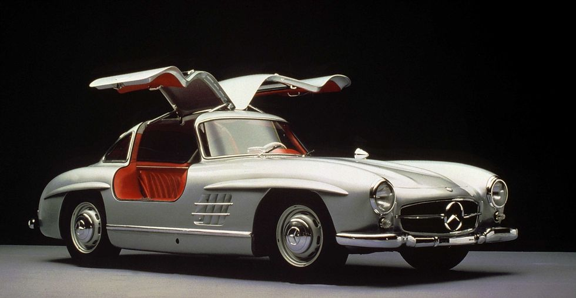
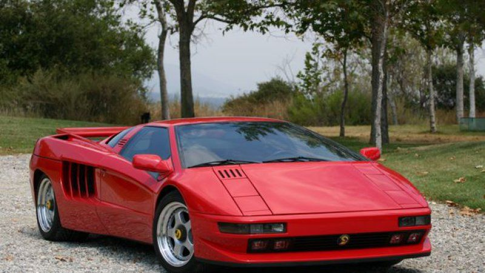

Gallery
Chevrolet Corvette

The emblem of Big Three muscle cars, the Chevy Corvette is the most collected vehicle in America. The second generation, which spanned 1963 to 1967, is "the most iconic American car ever made," says Keith Martin, publisher of Sports Car Market. "It's still breathtaking and fresh today." Early generation Corvettes remain plentiful in the U.S., so you can scour auctions, collector car dealers, and websites like classiccars.com for deals
Jaguar E-Type

Once called "the most beautiful car ever made" by Enzo Ferrari, the 1960s Jaguar E-Type is a classic sports car mainstay. "If you only choose one car from this list to drive, this is the one," says McKeel Hagerty, CEO of Hagerty, the world's largest provider of collector vehicle insurance. This staple of British motoring history still has verve–it can perform up to 150 m.p.h. and brakes better than most cars from its era. Visit the Jaguar Heritage Driving Experience program in Kenilworth, U.K., where you can pay for a day of driving the marque's classics.
Lamborghini Miura

Considered by some to be the sexiest car ever built, the Miura debuted in 1966 as a sleek mid-engine speedster designed to challenge Ferrari. "Piloting the Miura transcends driving experience to become a life experience," Hagerty says. "If the sound of six carburetors feeding a thirsty, vibrating V-12 moored right behind your head isn't enough, it's also arguably the most beautiful car ever produced." To buy one, contact the Lamborghini Club America or an auction house like RM Sotheby's or Gooding & Co. They're usually in the know about the cars before they reach the general market.
Porsche 911

The Porsche 911 represents vintage driving at its best—particularly during the golden era before the car's 1974 redesign. "There's magic in the early 911," Hagerty says. "It's an amazingly well-built machine that delivers one of the most honest driving experiences of any sports car ever built." Even by today's standards, first-generation 911s still have plenty of horsepower and can hold their own on the track. You can find one, even in mint condition, on eBay.
Rolls-Royce Dawn Drophead

Based on the first full-size car Rolls-Royce made after the war, the original Silver Dawn drophead launched in 1949 and retired in 1954. The name was intended to mark the dawn of a new era for the world and Rolls-Royce's place in it. Slightly smaller than pre-war cars, the Dawn helped the British bespoke carmaker reintroduce motoring craftsmanship while bringing the company into the modern age. They're extremely rare: only three of the original 28 dropheads remain in the U.S., and those are owned by private collectors. Happily, the carmaker is introducing a successor model after a 60-year hiatus.
Mercedes SL 300 Gullwing
Among the first sports cars of the post-war era, the Mercedes SL 300 Gullwing was the fastest production car of its time when it was introduced in 1954. As the first direct fuel injection series production car, the SL 300 could travel at an eye-popping 160 miles per hour. "Nobody expected something like that from Mercedes," says Constantin von Kageneck, a specialist in classic car marketing at the Mercedes-Benz Classic Center in Irvine, CA. Though about three-quarters of the original SL 300's survive today, many still belong to their original owners. To see one, visit the Classic Center or an automotive museum like the Petersen in Los Angeles.
Ferrari 250 GTO

Ferrari made just 39 of these elegant race cars between 1962 and 1964, so they are extremely rare. "The 250 GTO is probably the holy grail in terms of value and recognition, but the reality is only a handful of people in the world will ever have the chance to legitimately drive one," Hagerty says. An early model fetched $38 million at Bonhams' Quail Lodge auction at the Pebble Beach Concours d'Elegance two years ago. If that's too pricey, know that any 1960s Prancing Horse with a V12 engine is worthy of making the list.
Aston Martin DB4

The precursor to James Bond's getaway car, the Aston Martin DB4 is an iconic workhorse. "The DB4 is a thoroughbred that never gets flustered," Hagerty says. "I wouldn't hesitate to drive one across the country. It's no wonder that James Bond favored the derivative DB5." They're in short supply, so if you want to drive one, your best bet may be to befriend a collector.
BMW 3.0 CSL
If any part of you harbors a race-track fantasy, this is the car to track down. When BMW came to America in 1975, it brought a quartet of models with it, including the 3.0 CSL coupe. Driven by racing legends Brian Redman, Sam Posey, and Hans Stuck, the car claimed victory at the 12 Hours of Sebring race that year and won Daytona the following year. The pair of triumphs established BMW's performance chops stateside. In addition to its engineering and performance legacy, the 3.0 CSL pioneered a host of technologies found in later BMW models, from its first-ever four-valve six-cylinder engine to its early anti-lock braking system. BMW offers a turn at the wheel as part of its BMW Classic Center in Munich.
Acura NSX

Acura's halo car from 1990 to 2005, the NSX is young but mighty. "While it's not as sexy as its European rivals, the Acura NSX showed the rest of the world that supercar specs and daily-driver manners could co-exist," Hagerty says. "It inspires confidence and begs you to keep pushing, braking later, and turning harder. It may be the most underrated car on this list." Its successor, the new Acura NSX, reaches customers this year and is likely to inspire renewed interest in the original. Fortunately, Acura made 9,000 first-generation NSX cars so finding one online is easy.
Shelby GT350
Also known as the Cobra, this high-performance descendant of the Ford Mustang was a darling of the late 1960s. With Ford's V8 engine, the Shelby GT350 was a legitimate racecar for the street. "When you get into it and turn the key, the car doesn't only rumble audibly, it also actually shimmies side-to-side and up-and-down, just a bit," Hagerty says. "And that's while it's still parked. When you get on the gas it leaps and roars." You will quickly see why designer Carroll Shelby is lauded as a 20th-century motoring genius. To drive a vintage Cobra, visit a high-end classic car auction house, dealer, or specialized broker.
Ford Model T

Produced from 1908 to 1927, this is the car that birthed the American automotive industry. Affordable by mass market standards, the Model T begat car culture and road trips. "Everyone needs to know where they came from," Hagerty says. "When it comes to American motoring, that starting place is the Model T." With a volatile hand-crank engine and two-speed transmission (not including the reverse gear), the Model T isn't easy to drive, even if you can get your hands on one. But rest assured–27 mph will never feel so thrilling.
VW Beetle

A counter-culture classic, the vintage VW Beetle represents simplicity and fun–in other words, motoring at its best. "Besides the easy driving experience, the Beetle's friendly exterior attracts people no matter where you're driving, and it seems everyone has their own Beetle story to share," Hagerty says. "This is not the car to buy if you're shy." If you'd like to get behind the wheel, old Beetles can easily be sourced from eBay and classified ads.
Volvo P1800

The quirky Volvo P1800 was stylish enough for Roger Moore to drive one in the spy thriller TV series The Saint. This two-seater sports car is durable: one surviving model has clocked more than three million miles. Its brethren belong to private owners, but check with the Volvo Owners Clubs if you'd like to find one for sale or make an owner an offer.
Dodge Viper GTS

The V10 Dodge Viper GTS of the 1990s couldn't be built today. At 450 horsepower, it's every bit as raw as its predecessor, the Shelby Cobra, without anti-lock brakes or traction control to correct driver error. "It's the automotive equivalent of whiskey, neat–no pretense, just one hell of an experience," Hagerty says. You can find one online or through a collector vehicle auction house such as Auctions America or Mecum.
DeTomaso Pantera

With Italian styling and a reliable Ford V8 engine, the DeTomaso Pantera represents the best of both worlds and is a worthy alternative to similar Lamborghinis and Ferraris from the same era. "You'd expect an early '70s Italian car to be garish, loud, and hard to drive," Hagerty says. "While it is garish and loud, the Italian-bodied and American-powered Pantera is actually rather easy to drive." Procure one at a high-end classic car auction house, such as Barrett-Jackson or Bonhams.
Cizeta-Moroder V16T
Built from 1991 to 1995, this Italian-made V16 supercar was originally designed as the Lamborghini Diablo. But when Chrysler purchased a stake in Lamborghini and the Diablo's designers modified the plan, mastermind Marcelo Gandini took his original blueprints to automotive engineer Claudio Zampolli, who built it as a Cizeta. Cizeta built only a handful during the car's initial production run, but they occasionally resurface on the market.
McLaren F1

The McLaren F1 announced the British supercar maker's foray into modern racing when it was unveiled in 1992. Six years later, it set the record for the world's fastest production car, at 242 mph. "The McLaren F1 was Formula One legend Gordon Murray's high-tech supercar answer to Porsche and Ferrari," Hagerty says. "And it didn't just exceed the standards they established, it obliterated them. Driving an F1 is a sublime ballet of shocking power, braking, and control." McLaren only built 64 of these, but fortunately, it just put up for sale chassis #69, the 60th model built. If you have eight figures to spend, you can contact specialoperations@mclaren.com.
Porsche 356
Porsche's first production car, the rear-engine, rear-wheel drive Porsche 356, survived four high-flying generations before it was laid to rest in the mid-1960s. Considered the most highly developed of the four-cylinder Porsches, the 356 is also regarded by vintage car experts as the most fun to drive. Procuring one isn't difficult: about half of the 76,000 cars originally produced survive.
Datsun 240Z
The Datsun 240Z started the Japanese sports car craze when it arrived in America in the early 1970's. Offering lots of power and a pleasant interior for not much money, the Datsun paved the way for Toyota, Honda and Nissan to gain acceptance with U.S. consumers in the following decades. Classified ads from Hemmings and AutoTrader Classics have many Datsun 240Zs listed for sale.
Ferrari 308 GTS

If you watched television in the 1980s, you will likely remember Thomas Magnum, played by Tom Selleck, tooling around Hawaii in one of these targa tops on Magnum, P.I. Produced from 1975 to 1985, the two-seater V8 Ferrari 308 GTS represented elegance and adventure. The originals used on set were auctioned when the series ended, but you might find one on display at attractions such as the Cars of the Stars Motor Museum in Cumbria, England, or Universal Studios Hollywood.
Chevrolet Camaro

The original Camaro served as Chevrolet's answer to the Mustang–but with more style and power. General Motors introduced the Camaro in 1967, setting off an eight-cylinder pony war of American muscle power that persists today. First-generation Camaros abound online. If you'd like to buy one, search sites like eBay or AutoTrader Classics.
Fiat 124 Spider

The Pininfarina-designed Fiat 124 Spider debuted in the U.S. in 1968 to an eager audience. With ample trunk space and enough room in the cabin for two people not to touch shoulders, the roadster quickly became a road trip classic. "It doesn't have much power, but it's cute," Martin says. "It's a great summertime car." If you can't find an original model online, know that Fiat is introducing an updated 124 Spider for 2017.
Austin-Healey 3000

Introduced in 1959, the bulbous British roadster became the last of the "big Healeys" when it ended production in 1967. Curvaceous and brass, the Austin-Healey 3000 was an automotive icon of the Swinging Sixties. "This was the final version of the 'Big Healey,' with its powerful six-cylinder engine and overdrive," Martin says. "It will cruise easily at 75 mph on today's freeways." You can occasionally find a late-model Austin-Healey 3000 through Hemmings and other classic car-buying websites.